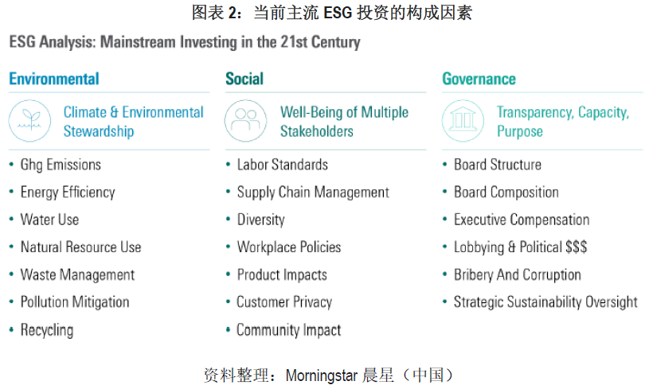
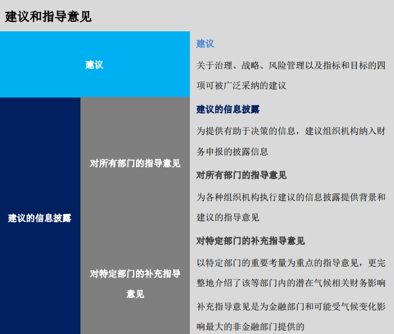
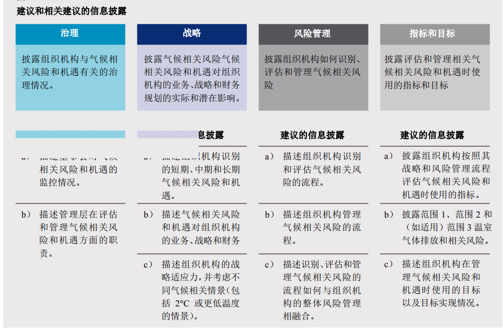
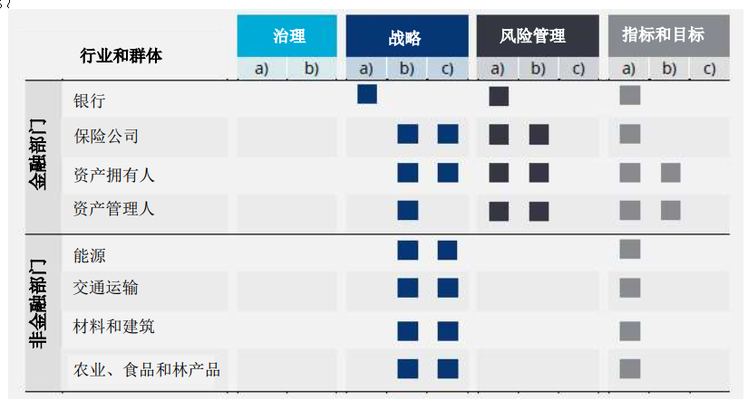
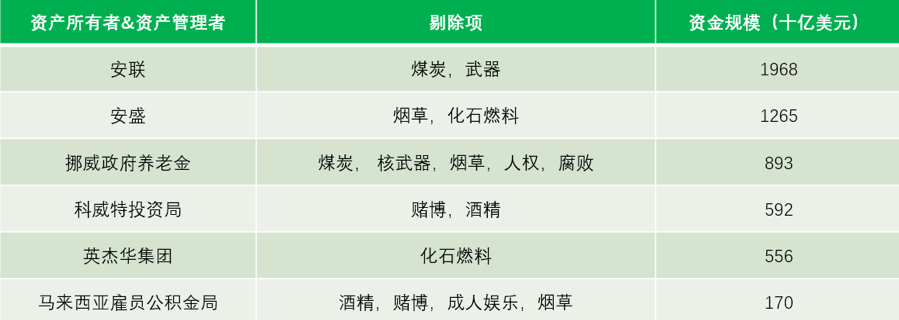
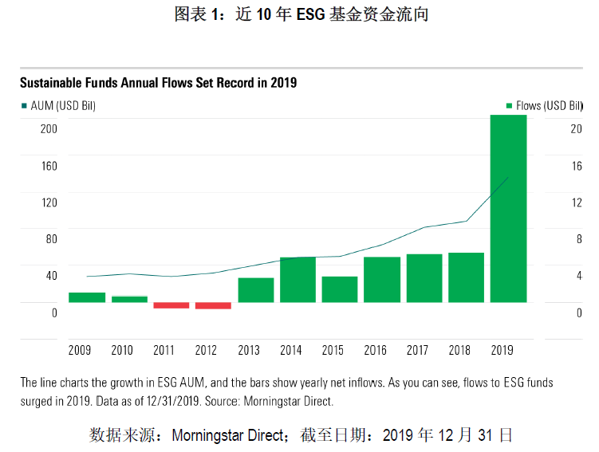
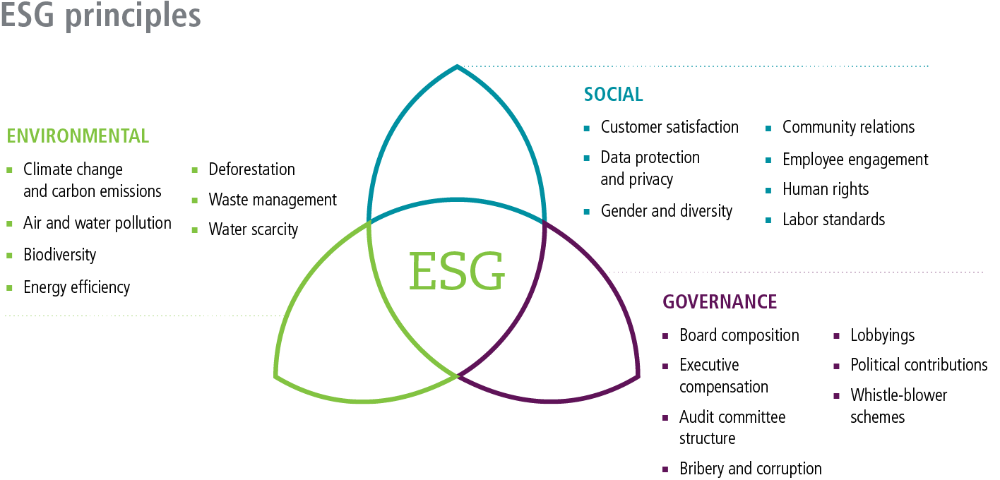

# ESG 投资
ESG的发展可追溯至上世纪70年代，发达国家开始兴起绿色消费及环境保护等倡议。美国的绿色金融制度的发展基本上可以分为两个阶段，一是20世纪90年代以前的“伴随性发展阶段”。在此阶段，绿色金融制度立法相对比较片面，主要体现在环境保护法中，涉及主体主要是政府部门。第二个阶段是20世纪90年代后的“快速发展时期”，美国趋于世界领先地位，其中奥巴马政府的绿色经济新政是绿色金融制度构建的转折点，涉及主体包括政府机关、非政府组织、金融机构、生产企业以及公民个人。
# 什么是ESG投资
在ESG投资与价值中提到：
ESG 投资是在投资流程中，将环境、社会、公司治理三个议题纳入考虑。依国际上的共识，纳入考虑的方式是以”ESG 投资的七大策略”来彰显，而这些策略同时界定了 ESG 投资。七大策略分别是负面筛选法、依公约筛选法、同类最佳法、ESG整合法、可持续主题投资法、积极股东法以及影响力投资。它们可单独使用，亦可复合使用。另外，七个策略崛起的时间不同，其中以负面筛选法最早，上世纪70 年代由 Pax World Fund 率先提出；影响力投资最晚，于 2007 年由洛克菲勒基金会、摩根大通银行等组织所推出。
如果逐一拆解ESG中的三个因素Environmental（环境）、Social（社会）及Governance（公司治理）：
- 环境：ESG投资主要关注企业在生产过程中产生的温室气体排放、能源效率、土地利用、废弃物处理、水污染及有害物质排放等因素。
- 社会：包括员工工作时长、工作环境的安全性、用工规范性和平等性、为社区提供的就业机会、员工医疗保健政策等。
- 公司治理：主要指企业的商业道德、董事会的独立性及背景多元化、股东投票权、高管和员工的薪酬体系、政治献金和游说花费、财务透明度等因素。

（资料来源：MorningStar晨星公众号文章:美国共同基金的ESG投资实践：标准、业绩及策略 (opens new window)）
# 投资策略
所有策略均为人为区分，因而不一定能囊括全部，或者必然正确。
MorningStar 给出一个区分的思路*（来源见上链接）*：
# 被动权益投资策略
如 Vanguard FTSESocial Index Fund（VFTAX），该基金所跟踪指数的编制来看，该指数主要涵盖美国大中盘股票，并从中剔除了涉及化石燃料、烟草、酒精、核能、成人娱乐及赌博业务的公司，然后采用市值加权法进行编制。
# 主动权益投资策略
Parnassus Mid-Cap Fund 采用了量化筛选和主动择优相结合的方法。该基金首先将涉及酒精、烟草、武器、核能、赌博及化石燃料业务的企业排除在其投资范围外，再用公司治理和商业道德作为正向指标进行个股精选。除此之外，该基金与大多数成长基金一样，将企业的竞争优势的持续性及成长空间列为选股考虑的重要因素。
# 固收投资
相较权益产品而言，ESG策略在固收产品中的渗透相对缓慢。阻碍债券基金发展ESG策略的主要原因有以下三个：首先，投资者可以选择只投资政府债基金来避免投资到他们不喜欢的公司；其次，债券投资者并不能像权益投资者一样通过股东大会投票来参与上市公司治理；最后，因为多数债券基金会采用较为分散的策略来降低违约风险，但采用ESG精选个券策略有可能会使组合无法实现理想的分散程度。
TIAA-CREF Core Impact Bond Fund采用了ESG量化筛选和个券选择相结合的方式，证明了ESG策略在债券基金中的可行性。
- 其中60-70%的资产投资于用ESG指标进行量化粗筛后的个券，以确保组合具有足够的持仓分散度和流动性；
- 剩余30-40%的仓位则采用ESG精选个券的方法进行管理，来实现影响力投资。
- 相应的，该基金的持仓主要由政府债和企业债组成，组合还持有9%的应税市政债，主要为ESG精选个券的结果。整体来看，该组合在久期和信用风险暴露程度上都和普通债基无异，业绩表现也与同类非ESG债基相当。
关于 ESG投资是否能创造社会价值的讨论，见ESG 投资与创造价值。
# 指南和倡议
ESG信息披露国际倡议
欧盟地区作为信息披露的全球领先者，已有多个组织对气候环境信息披露发布了包含：
- 欧盟委员会的《可持续金融行动计划》（Action Plan on Sustainable Finance）
- 欧洲理事会的《欧盟披露条例》（EU Disclosure Regulation）
- 欧洲议会的《欧盟基准法规》（EU Taxonomy Regulation）
国际证券委员会组织（IOSCO）
- 2019年1月， IOSCO（International Organization of Securities Commissions）发布《关于发行人ESG信息披露事项声明 (opens new window)》（Statement on Disclosure of ESG Matters by Issuers）文件，强调在披露和备案中加入ESG因素的重要性，并要求发行人提供完整、准确、及时的财务状况、风险披露。同时，声明鼓励发行人在其业务、风险与机遇评估过程中加入对发行企业财务业绩和价值创造潜在影响、ESG相关重大风险治理与监管意见以及ESG披露预计使用的风险评估方法与框架。
- 2019年6月，IOSCO又发布《新兴市场可持续金融与证券监管者的角色》最终报告，提出了十点建议以供IOSCO成员在发布有关可持续发展主题的资本市场产品和ESG披露要求的指南或规章时参考，旨在强化信息透明度，推动可持续金融发展，通过可持续性手段促进国际证券指导间的协调。该十条建议包括由发行人和其他受监管主体（包括董事会）在风险评估和治理中整合ESG重大问题；由机构投资者（包括资产管理者和资产所有者）将ESG特殊问题纳入投资分析政策；由监管机构要求披露ESG特殊风险、报告数据；关于可持续性手段的具体要求等。
气候相关财务信息披露工作组（TCFD）
TCFD（Task Force on Climate-Related Financial Disclosures），意即气候相关财务披露工作小组，为企业提供框架，方便公司向投资者、贷款人、保险公司和其他持份者提供相关信息。
截至2019年6月，支持TCFD的团体已上升至792个。
TCFD主要面向投资方、贷款方和保险公司等金融机构和非金融机构提供与气候相关的金融风险自愿信息披露建议，合理评估气候相关风险与机遇。
- 2017年6月，TCFD发布《气候相关财务信息披露工作组建议 (opens new window)》（Recommendations of the Task Force on Climate-related Financial Disclosures，中文版）最终报告以及特定行业补充指南，将气候变化纳入公司治理并对11项与气候相关的金融风险信息披露提出意见。
- 意见涵盖治理、战略、风险管理、指标和目标四大主题，分别对企业在识别气候风险与机遇、评估气候风险和机遇的指标与目标、预估风险与机遇对组织战略和财务计划的实际与潜在影响、治理气候相关风险的过程中信息披露给出建议，并强调通过审计和风险委员会加强对气候风险和机遇的监督，强化可持续发展、气候治理、财务合规等部门之间的合作。



央行与监管机构绿色金融合作网络（NGFS）
NGFS（The Network of Central Banks and Supervisors for Greening the Financial System）
- 2019年4月，NGFS发布《行动呼吁：气候变化是财务风险来源 (opens new window)》（A call for action Climate change as a source of financial risk），对央行、政策制定者、监管者和金融机构提出六条建议以促进气候相关风险方面的集体领导和全球协调行动，并呼吁央行将ESG因素纳入央行自有资产管理。报告同时列示了中国《绿色债券支持项目目录》和欧盟《可持续金融行动计划》相关内容，强调可在不同司法管辖区挖掘潜在的协同效应。
- 2019年10月，NGFS发布《SRI投资指南 (opens new window)》(A sustainable and responsible investment guide)，鼓励央行将TCFD框架用于自身信息披露环节，并在投资组合管理中采用可持续发展和责任投资原则以缓释可持续发展风险。目前，NGFS已经开始计划制定《气候与环境风险管理手册》。
# ESG 指数产品
在金融的二级市场，有非常多的ESG相关的指数产品，如：
- MSCI low Carbon Index
- FTSE CDP Carbon Strategy Index
- BNEF Global Corporate Renewable Energy Index
- Dow Jones Susstainability Index
- FTSE4Good Index
- Ned Bank Green Index
- Bombay Stock Exchange Carbon Index
- Korea Exchange - KRX SRI Index
- Istanbul Stock Exchange Sustainability Index
- S&P/IFC Carbon Efficient Index
个人或机构投资者根据上述指数产品进行投资决策。
# ESG 作为投资工具
# 主要的ESG投资方式
负面剔除
- 对ESG指标中评价负面的公司，如出现争议性，有违社会公德甚至违反法规等行为的公司；
- ESG指标预警体系并非一朝一夕的事，因此要进行负面剔除，应从该公司的历史问题进行追溯。如长生生物（002680.SZ）在2018年7月疫苗质量问题爆出后，终于2019年11月27日被摘牌退市。然而在2017年11月，长春长生的25.26万支百白破联合疫苗被检出不符合国家标准规定，还有类似涉及腐败贿赂、环境违法等的报道。

资料来源：Schroders, 方正证券报告
ESG整合
- 将ESG理念贯穿至投资过程。
- 将ESG风险和机会纳入传统财务分析和投资决策。这种类型包括在主流投资分析中考虑财务因素的同时考虑ESG因素。整合过程侧重於ESG问题对公司财务(正面和负面)的潜在影响，这反过来可能会影响投资决策。
- 在CFA与PRI联合发布的《中国的ESG整合：实践指导和案例研究 (opens new window)》（备份）这一报告中，探讨了目前国内主流基金的ESG整合实践方法。
可持续性聚焦
遵循同类最佳法或正面筛选法，即投资组合经理投资可持续性评级和状况最好的发行人。如果倾向於采取这种方法，管理人就必须专注于可持续性，这样相对于负面剔除法将给投资组合带来更多影响。
影响力投资
定义来自 Rockerfeller Philanthropy Adivsors (opens new window) （中文）
影响力投资的定义是，对公司、组织和基金的投资，且该投资以获得财务回报的同时产生社会与环境影响为目的。
影响力投资如何帮助实现财务目标？
- 许多社会公益项目认真遵循环境、社会和治理（ESG）准则，这可能带来优异的财务表现。
- 将投资和实现影响力合二为一可以简化战略，并有利于利用更大的资金池实现财务回报（以及影响力）。
- 投资者可以用基于市场的方法来解决他们所关心的社会问题，同时避免进行与他们的价值观相违背的投资。
# 将ESG应用于固定收益类证券估值
特许金融分析师协会（Chartered Financial Analyst Institute，CFA Institute）和联合国责任投资原则(Principle for Responsible Investment，PRI) 发布的最新研究 GUIDANCE AND CASE STUDIES FOR ESG INTEGRATION:EQUITIES AND FIXED INCOME (opens new window) （备份）显示，将ESG应用於固定收益类证券估值可以采用信用分析、相关价值分析/延伸分析、长期分析、敏感性/情景分析四种方式。
Security Valuation—Fixed Income
- Credit analysis
- Internal credit assessments: ESG analysis is used to adjust the internal credit assessments of issuers.
- Forecasted financials and ratios: Forecasted financials and future cash flow estimates are adjusted for ESG analysis and the effect on financial ratios is assessed.
- Relative ranking: ESG analysis impacts the ranking of an issuer relative to a chosen peer group.
- Relative value analysis/spread analysis:An issuer’s ESG bond spreads and its relative value versus those of its sector peers are analyzed to find out if all risk factorsare priced in.
- Duration analysis:The impact of ESG issues on bonds of an issuer with different durations/maturities is analyzed.
- Security sensitivity/scenario analysis: Adjustments to variables (sensitivity analysis) and different ESG scenarios (scenario analysis) are applied to valuation models to compare the difference between the base-case security valuation and theESG-integrated security valuation.
# 美国ESG投资实践
根据评级机构晨星（MorningStar）的统计(来源 (opens new window))（备份 ）：
ESG投资在近年来发展迅速，现已成为投资界最炙手可热的议题。2019年美国ESG基金的资金净流入超过200亿美元，较2018年的50亿美元出现了大幅提升。随着市场对ESG关注度的提升，Vanguard、PIMCO及Fidelity等各大基金公司纷纷加入ESG投资的行列，ESG的投资策略也开始日趋成熟。本文将以美国ESG基金为例，介绍当前国际上主流的几种ESG投资策略。

# John Hancock

# Pax World
Environment
Climate Change
- Manage operational and reputation risks
- Increase revenues by capitalizing on opportunities created by climate change regulation, incentives, and customer demand
Emissions & waste
- Reduce risk of liabilities and regulatory penalties for pollution
- Manage reputational risk
Resource Efficiency
Drive innovation and increase productivity Improve competitive advantage by recruiting and retaining talented employees
Social
Diversity, Human Capital & Safety
- Drive innovation and improve competitive advantage by recruiting and retaining talented employees
Product Integrity & Supply Chain Management
- Manage reputational risk
- Minimize costs associated with product recalls and related litigation
Community Relations
- Minimize risk of operational disruptions due to community opposition
GOVERNANCE
Board & Executive Diversity
- Improve decision-making, oversight and financial performance
Corporate Structure, Accounting & Transparency
- Increase accountability to shareholders
- Reduce risk of regulatory penalties and reputational damage from substandard business practices
Executive Compensation
- Incentivize sustainable, long-term value creation
# LEGG MASON
ESG Active Management
ClearBridge Investments (opens new window) offers ESG investment strategies across income, high active share and risk management, as well as customized portfolios.
Brandywine Global (opens new window) fully integrates ESG factors into investment research and decision-making across equity and fixed income strategies in addition to offering socially responsible strategies and customized mandates.
ESG Factors Integrated into Investment Approach
- Martin Currie (opens new window) believes ESG is especially valuable in emerging markets where corporate governance standards are often more complicated.
- Where appropriate, RARE (opens new window) incorporates environmental and other ESG factors into their cash flow forecasts and for revenues, expenses and capital expenditures.
- QS Investors (opens new window) uses their robust data-driven process to integrate ESG criteria from multiple ratings providers with fundamental information when building ESG-focused equity and multi-asset portfolios.
Customized ESG Strategies
Western Asset (opens new window) has offered customized portfolios since 1986. Today, portfolios include client-specified screening, sustainable bond portfolios and “Green” bond strategies.
ESG Awareness
- Clarion Partners (opens new window), a real estate specialist, fosters a culture of environmental responsibility and ensures that employees, tenants, partners and service providers have the tools and resources to make their properties more energy efficient.
- EnTrust Global (opens new window) asks its underlying managers to complete a pre-meeting questionnaire to determine if the manager complies with environmental, social and governance guidelines.
# Allianz Global Investors
Integrated ESG
Integrated ESG corresponds to active ESG risk management aimed at better financial returns. Within this approach we integrate financially material ESG factors into investment analysis and decision making in a systematic and disciplined way, without constraining the investment universe.
How it works: While many firms talk about integrating ESG, we have taken a rigorous approach in our “Integrated ESG” labelling. Each portfolio team is responsible for questioning any potential holdings with low ESG ratings and contributing to the firm’s “digital debate” about companies’ ESG risks. This internal crowdsourcing ensures that experienced portfolio managers and industry analysts contribute their views on ESG risk. We believe this approach is better than relying entirely on external ESG ratings and buying in to third party methodologies and judgements.
When a portfolio team still sees a compelling opportunity to invest in a company, despite an acknowledged ESG risk, they must document their risk/return thinking in our collaborative system. Because our portfolio managers understand ESG risk and also have the ability to own companies with high ESG risks, we’re in a unique position to engage with those companies that need it most, as we seek to reduce that risk through change. One of the strengths of Integrated ESG is that it builds an additional factor into existing investment processes: enhancing rather than changing the process. In this way, we are committed to, and in the process of, embedding ESG factors tangibly across all of our strategies regardless of asset class.
SRI(Sustainable and Responsible Investing)
Our SRI strategies aim to create a sustainable portfolio by combining financial and sustainability assessments in investment analysis and portfolio construction. The offering appeals to clients that want their investments to not only generate financial value but also to reflect their own values.
Through our experience in SRI, we are well equipped to provide investment solutions that address clients’ extra financial needs – whether through the application of negative screening, or increasingly through positive screening.
Our SRI strategies focus on a “best-in-class” approach ie, selecting companies whose ESG credentials surpass their peers’. SRI strategies can also invest in securities that are not “best-in-class” as long as they have at least average internal SRI ratings and are demonstrably committed to improving ESG credentials as part of their corporate strategy. These securities showing “best efforts” can be a source for alpha generation. AllianzGI SRI strategies apply minimum exclusion criteria, a human rights filter and exclude “worst-in-class” issuers.
Impact Investing
At AllianzGI, we aim to enable our clients to maximise their exposure to positive environmental and social outcomes by offering a choice of impact investing strategies across asset classes. AllianzGI offers listed (green bonds) and private market impact investing strategies. Both have the clear intention of generating societal benefits that are aligned with the UN Sustainable Development Goals (SDGs). In order to qualify for an impact investing strategy, an investment must focus on addressing pressing environmental and social issues, with the UN SDGs used as a recognised credible international framework.
AllianzGI’s Impact investment strategies are defined by three core beliefs:
- Intention: The intention of a strategy and its investments is to generate incremental positive social and/or environmental value while delivering financial returns.
- Association: There is a clear association between each investment and the positive output delivered.
- Measurement & report: The impact will be measured on a best efforts basis and reported in order to validate each specific strategy.
SDG-aligned and sustainability-themed investing
The 17 global SDGs were set by the UN General Assembly in 2015 as a way of achieving a better and more sustainable future by 2030. Large capital investments are crucial to meeting the targets detailed under SDGs.
Investors are beginning to realise that they have the power to make an impact by choosing where and how to invest their funds. Investing with sustainability goals in mind allows investors to influence the way the economy works or how a company behaves through the allocation of capital. It can drive innovation by channelling money towards new technologies, reinforce positive behaviour by rewarding good practices and impact the entire economic value chain. Furthermore, designated strategies can make investments with a specific goal in mind, such as addressing the need for clean water or curbing carbon emissions.
AllianzGI has developed a framework for SDG-aligned and sustainability-themed investing to provide a clearer proposition for clients who want their investments to contribute to a better world, in addition to generating financial returns.